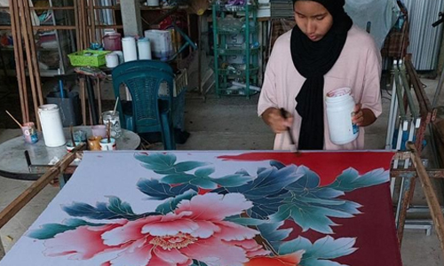

Snorkeling and Diving
Explore the vibrant underwater world of Terengganu, teeming with colorful coral reefs, diverse marine life, and shipwrecks. Popular destinations include Pulau Redang, Pulau Perhentian, and Pulau Kapas
Island Hopping
Embark on a boat tour to explore the stunning islands of Terengganu, such as Pulau Redang, Pulau Perhentian, Pulau Kapas, and Pulau Lang Tengah. Enjoy swimming, sunbathing, and relaxing on pristine beaches.

Kayaking
Paddle through calm bays, mangrove forests, and serene rivers in Terengganu. Enjoy a peaceful and scenic adventure, observing the natural beauty of the region.
Fishing
Cast a line and try your luck at catching a variety of fish in Terengganu's waters. Whether you prefer deep-sea fishing or river fishing, there are plenty of opportunities to reel in a catch.

Learning the Art of Batik Painting
Create your own masterpiece by learning the intricate art of batik painting, a traditional textile art form.
Learning the Art of Songket Weaving
Witness the intricate process of weaving songket, a traditional silk fabric adorned with gold or silver threads.
Witnessing a Traditional Dance Performance
Immerse yourself in the graceful movements and vibrant costumes of traditional Terengganu dances like the Joget Gamelan and Ulek Mayang.
Exploring the State Museum
Discover the history and culture of Terengganu through exhibits showcasing artifacts, traditional costumes, and weaponry at the Terengganu State Museum.
Trekking in Tasik Kenyir
Embark on a trekking adventure in Tasik Kenyir, the largest man-made lake in Southeast Asia. Enjoy breathtaking views of the rainforest and encounter diverse wildlife.
Camping at Chemerong Forest Park
This park offers a variety of camping sites, from basic campsites to more developed areas with amenities. It's a great option for those seeking a more adventurous camping experience.
Witnessing Turtles Laying Eggs
Witness the incredible spectacle of sea turtles nesting and hatching on the beaches of Terengganu. Participate in responsible turtle watching programs to protect these endangered creatures.